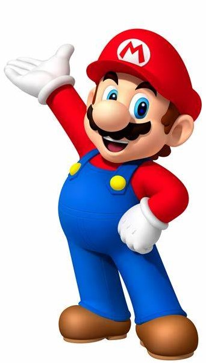

Mario (マリオ Mario?) é um personagem fictício da franquia e série de jogos eletrônicos Mario da Nintendo, criado pelo desenvolvedor e designer de jogos eletrônicos japonês Shigeru Miyamoto. Servindo como mascote da Nintendo e protagonista homônimo da série, Mario já apareceu em mais de 200 jogos desde sua criação. Mario é retratado como um encanador italiano baixinho rechonchudo e bigodudo vindo do Brooklyn que reside no Reino dos Cogumelos. Ele repetidamente tem a missão de resgatar a Princesa Peach do vilão Bowser, e impedir seus diversos planos de destruir e dominar o reino. Mario também tem outros inimigos ou rivais, incluindo Donkey Kong e Wario. Desde 1995, Mario é dublado por Charles Martinet.[2]


Mario Bros
